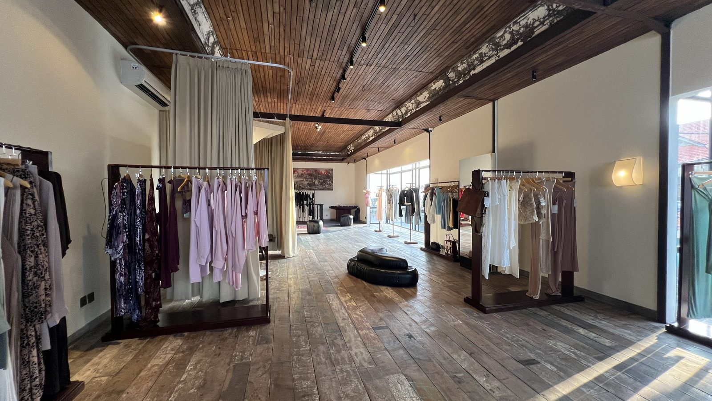
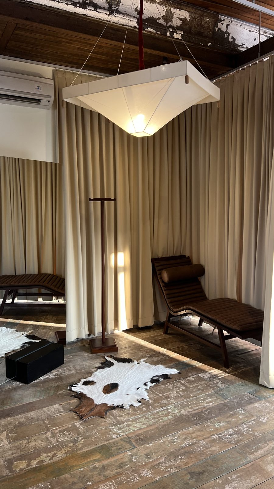
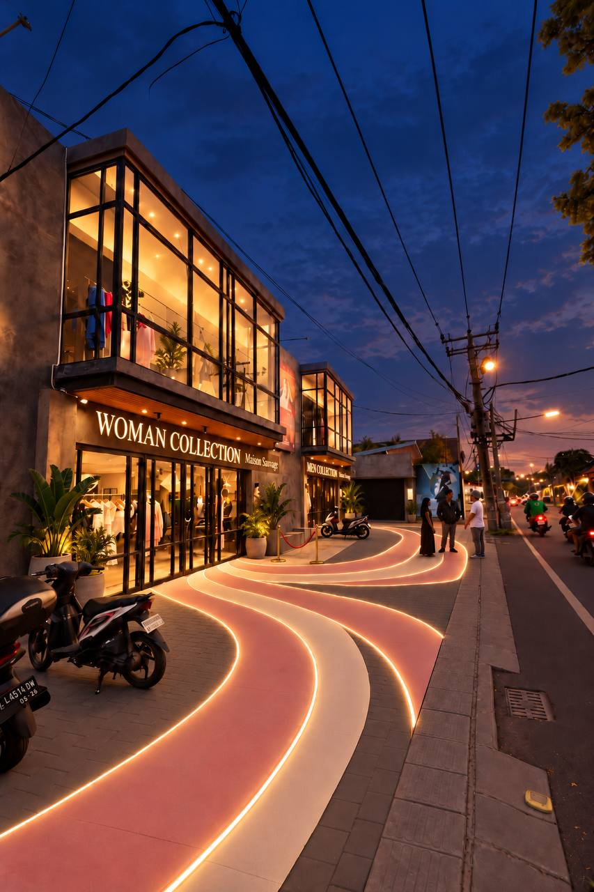
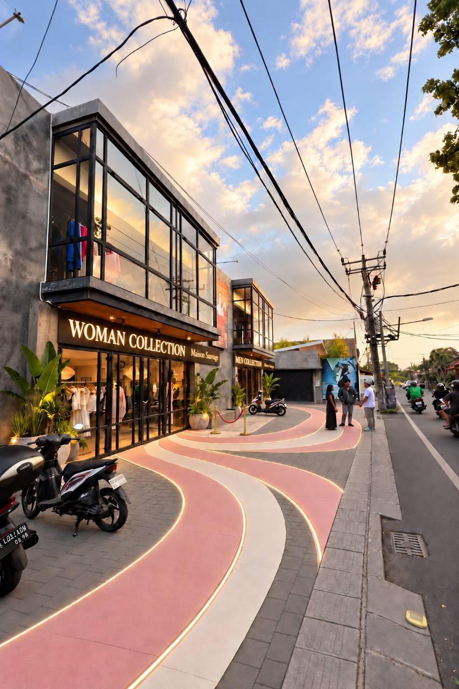
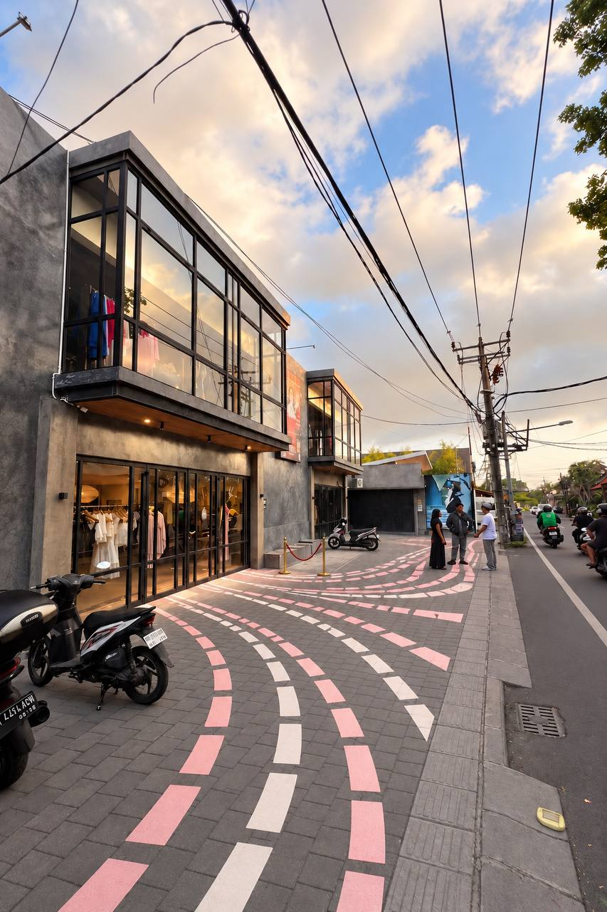
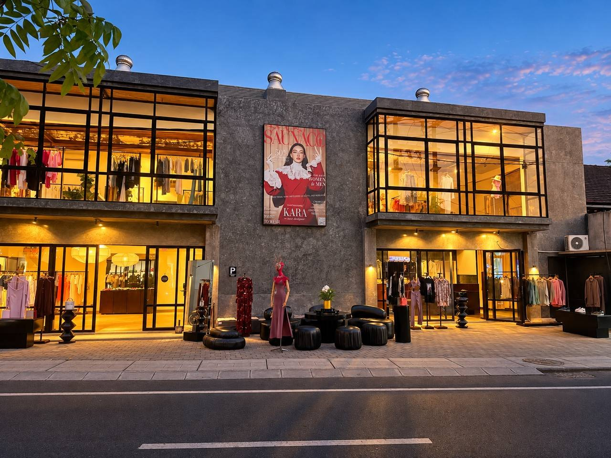

Так магазин выглядит внутри
Трековый свет и кондиционеры в обоих залах. Наверху деревянные пол и потолок.



06 / 33
Умалас, Бали
Большой магазин брендовой одежды на Бали
Два этажа, около 300 м² · земля 295 м²
4,9 ★ Google Карты, 217 отзывовМагазину нужен инвестор. Вложив 107 000 $, к июлю 2030 года вы получаете всего
от 130 000 $
до 204 336 $
Вложение возвращается за 11-15 месяцев в реалистичном и оптимистичном сценариях. Один инвестор на всю сумму. Внести можно по частям, по графику платежей аренды. Расчёт сделан при взносе всей суммы 1 декабря 2026, с декабря 2026 по апрель 2027.
Магазину 45% с каждой продажи, с 2028 года 50%. Из этого вычитаем расходы и получаем результат месяца. Инвестору 80% результата, пока не вернулись 107 000 $, потом 15%. В карточках ниже средний месяц 2028 года: это первый полный год, когда аренда уже оплачена и все каналы работают в полную силу.
Это не сценарий, а факт прошлой зимы по ежедневным отчётам продавцов. Магазин открылся в октябре 2025 года посреди стройки: без торжественного открытия, почти без рекламы и без понятной вывески.
Первая зима без рекламы и без официального открытия показала спрос. В феврале 2026 партнёр, который всё организовывал, ушёл. Управление ослабло, брендам задержали оплату, полки опустели, и продажи пошли на спад.
Теперь магазин перезапускается с планом. Долг брендам закрываем в первый день, и они снова привозят товар на реализацию: магазин ничего не покупает, платит бренду только после продажи. Поэтому уровень прошлой зимы для нас пессимистичный сценарий, а цель выше.
Здание на Jl. Raya Bumbak 169 в Умаласе. Раньше здесь был ресторан, его коммуникации сохранены. План магазина от архитектора.
Трековый свет и кондиционеры в обоих залах. Наверху деревянные пол и потолок.


Магазин открылся на деньги основателя, а идея была управляющего партнёра. Первую зиму магазин торговал без рекламы. Спрос есть, это доказано цифрами. Сломалось управление: партнёр ушёл в феврале, брендам задержали оплату, полки начали пустеть. Основатель не сразу взял управление на себя: первое время искал управляющего, несколько неудачных попыток привели к ещё большей потере выручки. Сейчас основатель ведёт магазин, а в помощники взял управляющего, которого давно знает и которому доверяет. Инвестор нужен, чтобы вернуть товар и запустить магазин по плану.
С октября 2025 по январь 2026 магазин жил и рос: 41 бренд, полные полки, три продавца, 24 233 $ продаж в декабре и 21 586 $ в январе. Это и есть магазин, который мы перезапускаем.
В феврале 2026 ушёл партнёр, который вёл магазин. Новый товар перестал приходить, полки редели, магазин не развивался, а спасался. Всё, что после февраля, это спад без товара, а не показатель спроса. Поэтому в расчёте его нет.
Почти без рекламы.Нет понятной вывески.С улицы непонятно, что это магазин одежды.Нет призыва зайти.
И при этом январь 2026:


Лучший день января: 4 380 $ за день. Пик 31 декабря 2025: 30 посетителей и 21 покупка за день при трёх продавцах.
Из рекламы был только таргет, один месяц и на маленьком бюджете. Остальное сделали витрина и сарафанное радио.
Понятная вывеска, вход, который зовёт зайти, и реклама ещё впереди. На следующем экране мы показываем, как видим оформление входной группы и фасада.
Визуализация
Сейчас с дороги не понятно, что это магазин одежды. Входная группа в расчёте запуска: вывеска с названием и коллекциями над каждым входом, свет фасада, дорожки и парковка, которые ведут к дверям, растения у входа. Три варианта рисунка парковки.



На видео бренды, с которыми работает магазин, и гости. Такие вечера часть плана: показы брендов, мастер-классы, воскресные маркеты на парковке, встречи с покупателями на втором этаже.
За год в магазине продавались вещи 72 брендов, все на реализации. Ниже те, что продавались чаще всего: локальные дизайнеры Бали и Индонезии, одежда, купальники, украшения, кожа. С приходом инвестора возвращаем бренды прошлой зимы и добавляем новые категории: интерьер, ароматы, косметика, подарки.
Живые подписчики и много своего контента. Можете посмотреть сами.

Выручка по месяцам по ежедневным отчётам продавцов, в долларах. Каждый вечер продавцы пишут, сколько людей зашло, сколько купило и на сколько. 420 отчётов с 1 октября 2025 по 27 октября 2026 собраны в одну таблицу.
По договору вся аренда за 5 лет и депозит за год вносятся вперёд. По новому графику, подписанному арендодателем, последний платёж 1 апреля 2027 года. После него до июля 2030 года за аренду платить не нужно.
Четыре статьи и небольшой остаток. Первая сохраняет здание до 2030 года, вторая закрывает долг брендам, и они снова привозят товар на реализацию, третья делает магазин видимым с дороги, четвёртая оформляет сделку.
| Аренда с декабря 2026 по апрель 2027, пять платежей по графику | 70 956 $ |
| Долг брендам, сразу | 18 470 $ |
| Запуск: входная группа и свет фасада, подарки для новых брендов, манекены, сигнализация, растения у входа | 5 908 $ |
| Оформление сделки в день поступления денег: 2 000 $ нотариусу, 5 000 $ вознаграждение за привлечение инвестиции (5% от суммы, по рынку 3-7%) | 7 000 $ |
| Остаётся на счёте | 4 666 $ |
| Итого | 107 000 $ |
Реклама, события, кофе-уголок, стилист и менеджер по партнёрам оплачиваются из продаж и включаются ступенями, когда продажи два месяца подряд выше цели. До этого на рекламу идёт 1 000 $ в месяц.
На видео вечер у магазина: гости, музыка, показ вещей брендов. Такие встречи мы уже проводили. Теперь планируем делать их регулярно, каждые выходные.
По отчётам продавцов выходные это самые тихие дни: в воскресенье заходит 5,8 человека, в среду-пятницу по 7,3. Поэтому на выходные ставим события, которые приводят людей к магазину: вечера брендов, закрытые предпоказы коллекций, ужины на 20 человек на втором этаже, мастер-классы. Первый воскресный маркет поднял день с 2 до 8 посетителей за час до дождя.
В модели это канал «маркеты и события». В реалистичном сценарии с марта 2027 он даёт 3,3 человека в день, в оптимистичном 6,3.
Продажи считаем от людей. Каждый человек в день приходит из конкретного канала, а расходы на канал включаем только после того, как предыдущий шаг дал продажи.
8,8 человека в день с полными полками. Факт по отчётам. База всех сценариев.
Вход, вывеска, свет фасада. Половина покупателей находит магазин с улицы. Мимо гуляют и иногда заходят, но больше к нам заезжают на байках и машинах: человек замечает магазин и заходит на третий раз.
Русскоязычные на Бали, по этой базе магазин не рекламировали ни разу. Русские 40% покупателей.
Вечера брендов, предпоказы коллекций и ужины на втором этаже, воскресный маркет у магазина. Первый маркет поднял день с 2 до 8 посетителей за час.
Консьержи вилл и отелей, водители, стилисты, шопинг-туры по дизайн-магазинам. 80% покупателей туристы.
Таргет 1 000 $ в месяц с первого дня, потом доля продаж. Онлайн-продажи как второй поток к продажам в зале: сайт магазина, маркетплейсы и заказы через WhatsApp с доставкой. В модели это от 3% до 15% к продажам зала.
Четыре числа, которые мы считаем честной проверкой любого сценария.
Прошлая зима с полными полками давала больше любой из этих границ. Вложение закрывает долг брендам, и товар возвращается на полки без покупки: бренды привозят его сами.
На чём держится расчёт.
Ремонт, интерьер и мебель оплачены. Деньги инвестора не уходят в стройку.
Бренды привозят свои вещи, магазин платит им только после продажи. Продали платье за 100 $: 45 $ остаются магазину, 55 $ уходят бренду. С 2028 года магазину 50 $.
После апреля 2027 аренда оплачена до июля 2030 года. Постоянные расходы это продавцы, охрана, свет и учёт, около 2 800 $ в месяц. Реклама и команда роста растут только вместе с продажами.
80% результата каждого месяца идут инвестору, пока не вернулось вложение. Это и даёт возврат за 11-15 месяцев, а не за годы.
Для пессимистичного сценария достаточно повторить прошлую зиму: 24 233 $ в декабре посреди стройки, без открытия и почти без рекламы.
Высокая доходность это ещё и награда за то, что инвестор приходит сейчас, а не после восстановления.
Сколько инвестор получил нарастающим итогом, с декабря 2026 по июль 2030. Где линия пересекает пунктир, вложение вернулось.
Защита дохода инвестора
Три слоя защиты, один за другим. Каждый следующий включается, только если предыдущего не хватило.
80% результата месяца инвестору, пока не вернулись 107 000 $. После возврата 15% до конца аренды. В реалистичном сценарии к июлю 2030 это 163 764 $, и защита не нужна.
Июль 2030, окончательный расчёт. Если инвестор получил меньше 130 000 $, все деньги бизнеса на счёте, включая резерв, идут ему до этой суммы. В пессимистичном сценарии так приходят 17 888 $.
По договору аренды компания внесла арендодателю залог 850 млн IDR. Арендодатель возвращает его через 30 дней после окончания аренды, в августе 2030. Если после расчёта инвестору всё ещё не хватает до 130 000 $, разницу закрывает залог. Он уже внесён, это не обещание из будущей прибыли.
Договор с компанией, которой принадлежат магазин и право аренды здания. Деньги инвестора идут сразу туда, где они нужны, а не в кассу.
PT Maison Sauvage Bali, компания с иностранным капиталом (PT PMA). Договор с инвестором подписывает компания.
Долговой договор. Условия выплат: 80% результата до возврата вложения, потом 15% до конца аренды, защита до 130 000 $ при окончательном расчёте, разницу закрывает залог за аренду.
Аренду переводим напрямую арендодателю, долги брендам напрямую брендам по сверке. На каждый платёж квитанция.
На индонезийском и английском, по праву Индонезии, у нотариуса. Оформление сделки оплачивается из вложения: 2 000 $ нотариусу и 5 000 $ вознаграждение за привлечение инвестиции, 5% от суммы, по рынку 3-7%. Инвестор может привлечь своего юриста.
Новый график платежей арендодатель уже подписал. До первого платежа он письменно подтверждает, что договор действует, даёт согласие на пересдачу здания в пользу инвестора и на выплату залога инвестору. Право на залог переуступается инвестору у нотариуса. Без этих документов деньги не переводим.
Каждый месяц отчёт о результате и выплате, выписки банка и терминала. Доступ к ежедневным отчётам продавцов.
Больше 65% вложения уходит на аренду. После этого здание оплачено до июля 2030 года. У такой аренды есть цена, по договору это 3 905 $ за каждый оставшийся месяц. В любой момент она больше, чем инвестору осталось получить назад.
Если к 1 октября 2028 инвестор получил меньше 50 000 $, у него появляется право сдать здание другому арендатору и вернуть вложение из арендной платы.
Проверка 1 октября 2028. Если инвестор получил меньше 50 000 $, у владельцев 60 дней, чтобы закрыть разницу. В пессимистичном сценарии к этой дате инвестор получает 54 368 $, план Б не включается.
С 1 декабря 2028 до 30 июня 2030 компания сдаёт здание целиком или по этажам тому, кого выберет инвестор, это 19 месяцев. Арендная плата идёт инвестору, пока не вернётся вложение. Если магазин остановится раньше даты проверки, ждать её не нужно: арендатора ищем сразу.
По цене договора пересдача за 19 месяцев даёт 74 580 $ после налога 10% и с продажей оборудования. На 30% дешевле 54 546 $. Недостающее до 130 000 $ закрывает залог за аренду 46 863 $: защита действует и после плана Б.
Передаются инвестору в залог по описи. Если право включилось, их можно продать в счёт долга.
С арендодателем есть устная договорённость о пересдаче здания. Перед сделкой заключаем с ним письменный договор об этом, до перевода денег.
Около 140 м². В сентябре 2026 один из брендов хотел снять его часть под офис. Здание можно сдавать и по этажам.
С 1 декабря 2026, дня сделки, три шага по очереди. Дальше дорожная карта: три этапа до июля 2030 и идеи на рост.
Итог: уровень прошлой зимы. Это пессимистичный сценарий.
Итог: реалистичный сценарий, а при двойной отдаче каналов оптимистичный.
Прилёты иностранцев на Бали по месяцам, по статистике Бали. В 2025 году прилетело 6,95 млн человек, на 9,7% больше, чем годом раньше. Рекорд июль 2026: 697 тыс. за месяц. Низ рынка в феврале, марте и ноябре, верх в июле и августе.
С мая 2026 брендам перестали платить, и товар ушёл с полок. Сезон сам по себе дал бы летом 0,90-0,95 от среднего месяца, то есть спад на 5-10%. Линия показывает, сколько давал бы магазин с полными полками на уровне прошлой зимы: 16 080 $ в июле, 15 561 $ в сентябре. По факту было 7 098 $ и 3 135 $.
Это и есть пессимистичный сценарий модели: прошлая зима с полными полками и сезон по статистике Бали.
Шаг 1 после сделки
Товар это главный рычаг прибыли. Когда его много, чаще покупают, выше чек и больше людей заходит. Первый месяц после сделки работаем только на полки.
Планы роста. В расчёт модели не входят
Сейчас магазин ничего не покупает: бренд привозит вещь, и с продажи на 100 $ магазину остаются 45 $. Когда продажи станут стабильными, добавляем два направления, где магазину остаётся больше.
Так магазин ещё не работал. Это планы после выхода на стабильные продажи, за счёт прибыли магазина, а не из вложения инвестора. В финансовую модель они не входят и остаются запасом сверх расчёта.
Первый сезон магазин прошёл почти без маркетинга. Теперь каждый шаг сверяем с цифрами и с опытом тех, кто уже построил своё на Бали.
Продавцы каждый вечер присылают отчёт: сколько людей зашло, сколько купило, сколько продали. Сразу видно, что сработало.
QR и промокод на входе, вопрос «как узнали о нас» каждому покупателю, счётчик на двери. Через 60-90 дней у каждого канала своя цифра, и модель пересчитывается.
Ничего нового не запускаем, пока предыдущее не дало продаж. Ступени включаются, когда продажи два месяца подряд выше цели.
Владелица сети из 9 мультибрендовых магазинов на Бали и предприниматели из Улувату. Сначала узнаём, что здесь работает, потом тратим.
Цена зафиксирована до 2030 года. После последнего платежа аренда оплачена до конца срока. Есть право продления. Что остаётся инвестору при закрытии, на экране «Если магазин закроется».
Новый график платежей подписан арендодателем. Аренду закрываем из вложения в первую очередь, до любых других трат.
Закрываем долг брендам и платим вовремя. Новые бренды приходят сами: 21 октября новый бренд подписал договор и привёз вещи на продажу.
Защита до 130 000 $ при окончательном расчёте и план Б: если к 1 октября 2028 инвестор получил меньше 50 000 $, он вправе пересдать здание.
Основатель управляет магазином сам, с ним новый управляющий. Если управляющий уйдёт, основатель продолжит вести магазин, пока ищет нового. С командой познакомим при первом обращении.
Выручка и расходы в рупиях, расчёт по курсу 18 138 за доллар. Если рупия ослабнет, выплаты в долларах будут меньше. Валюту выплат закрепляем в договоре.
Нам важно, чтобы бизнес жил дальше. Поэтому до сделки открываем инвестору документы и цифры.
Покажем оба этажа, договор аренды, кассу и отчёты продавцов. Расскажем план на первые 90 дней.

Запросить документы, задать вопросы и обсудить детали можно в Telegram магазина. С основателями с удовольствием проведём Zoom и пообщаемся лично.
Написать в TelegramJl. Raya Bumbak 169, Умалас, Бали
Частное предложение, не публичная оферта. Расчёты по сценариям, а не гарантия дохода.